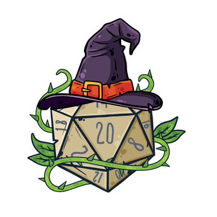
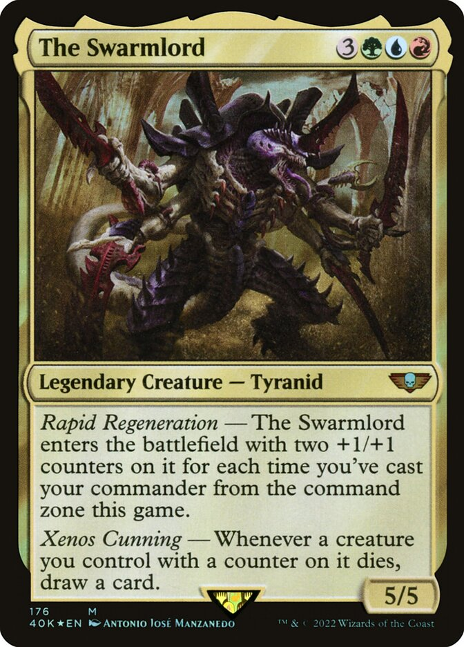
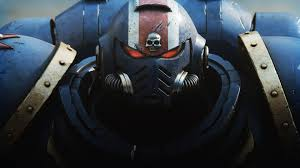

Dungeons and dragons is a table-top role-playing game involving imagination.Matt likes to play all kinds of games. Multiplayer, singleplayer, it's all fair game.

Magic: The Gathering is a card game that has many collaborations with other popular media.

Warhammer is a tabletop game that has extensive lore. Matt is very invested in the world of Warhammer.Matt likes to paint as one of his hobbies. Recently he has been painting Warhammer figures.Matt likes to read war related history books and fantasy.